1. 関数の雛形を用意する。
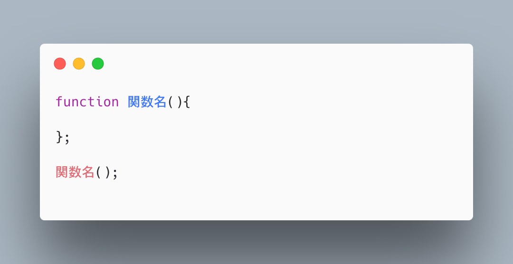
2. ここに今回の問題の条件に合わせて、関数名と引数を記入。
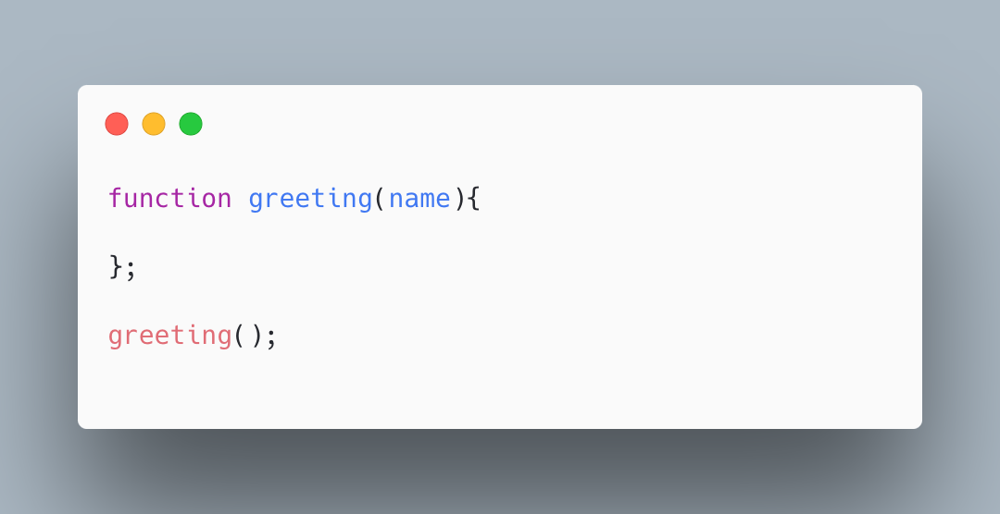
3. 関数の{}内に、コンソール画面に「ooさん、こんにちは」と表示されるよう、処理を記述する。
4. 関数の外で関数の呼び出しをする。この時、まだ何も入れていないカッコの中に適当な値を入れる。
5. コンソール画面に、4で入れた値が「ooさん、こんにちは」のooに入っていれば、成功です。
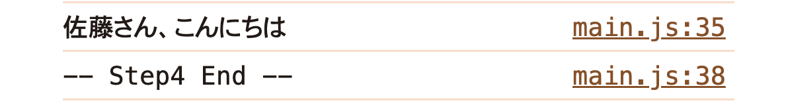
.class-get_itemのついたdivタグごと
コンソールに表示されれば
成功です
1. “querySelector”というメソッドを使用して、該当のクラスがついている要素をdocumentから取得する。
2. 1の操作を任意の変数に定義する。
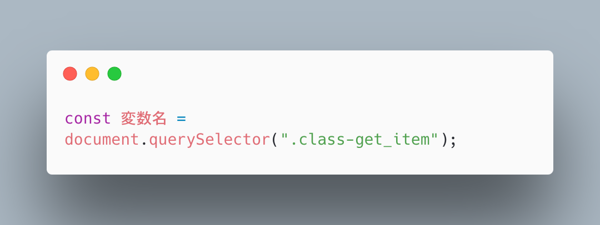
3. コンソールで変数を出力し、該当のクラスの情報がコンソールに表示されていれば成功です。
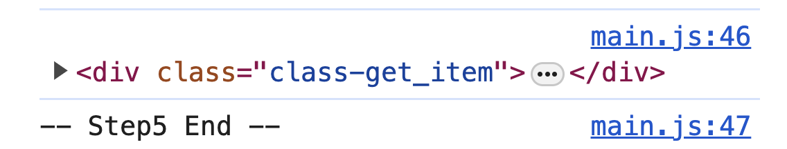
この文字をクリックすると、文字が青色になります
1. “querySelector”というメソッドを使用して、該当のクラスをdocumentから取得する。
2. 1の操作を変数に定義する。（変数名は任意）
3. 2で定義した変数に対して、クリックイベントを発火させる。
（クリックイベントは"addeventListener"を使用しましょう！）
4. 変数がクリックされたときの処理を、3で作成した関数の{}内に記述する。
今回クリック前とクリック後のスタイルは全てstyle.css内に記載がある。
クリック前とクリック後のスタイルは、
”class-method_item”クラスに”is-active”クラスを追加し、切り替えを行っている。
したがって、{}の中に書く処理は、
「”classList”メソッドを使用し、任意のセレクタに”is-active”クラスを追加する」
という旨の記述をすれば良い。
5. HTMLの"class-method_item"クラスに"is-active"クラスがついている＋クリック箇所が青色になっていれば成功です。
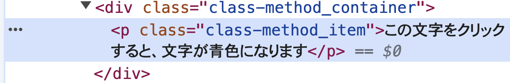
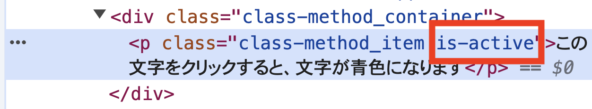
1. for文の雛形を用意します。
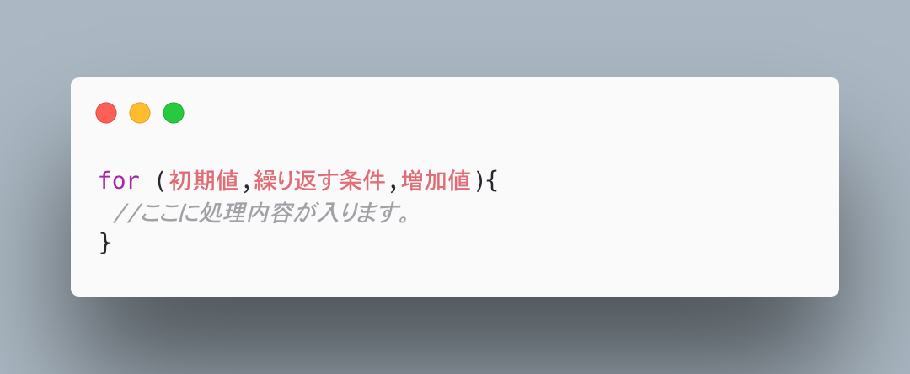
2. 「初期値」には”let i = 1;”のように、ループがスタートする時の値を指定する。
3. 「繰り返す条件」には”i <=5;”のように、何回まで処理を繰り返すかを指定する。
4.
「増価値」には”i++”のように記述する。すると、以下のようになる。
【🔗参考】
”++”ってどういう意味？
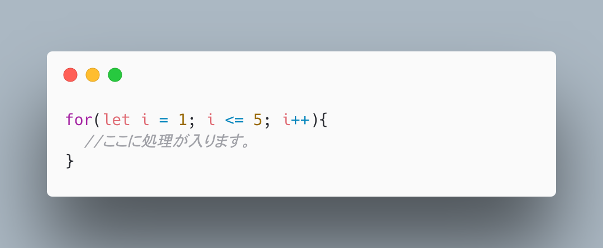
5. for文内の処理に、コンソールで変数を表示するように記述を加える。
6. コンソールに1~5までの数値が表示されていれば成功です。
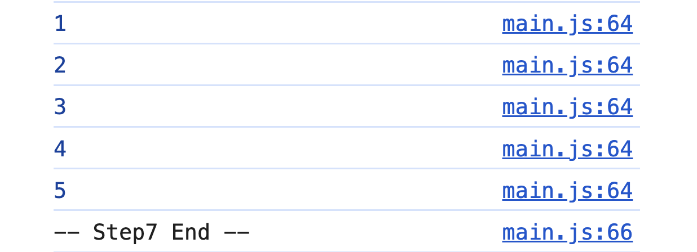
1. 任意の変数に初期値を代入します。
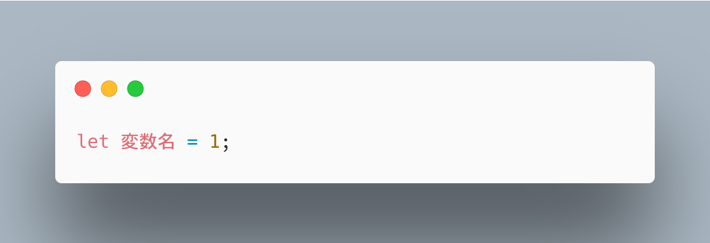
2. while文の雛形を用意します。
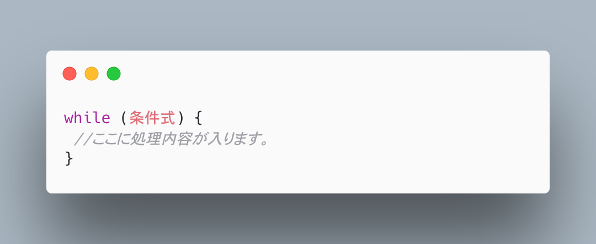
3. 「条件式」には、for文の「繰り返す条件」と同様、何回まで繰り返すかを指定する。
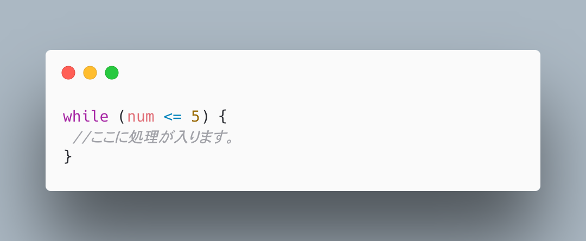
4. 処理内容には、まず1から表示するために、コンソールで変数を表示する記述をしましょう。
5. 次に、この変数に数を一つずつ増やすための記述をするため、
コンソールの下に”変数名++”のように記述しましょう。
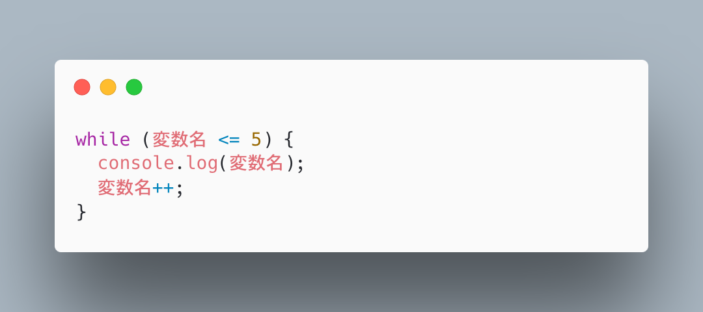
6. コンソールに1~5までの数値が表示されていれば成功です。
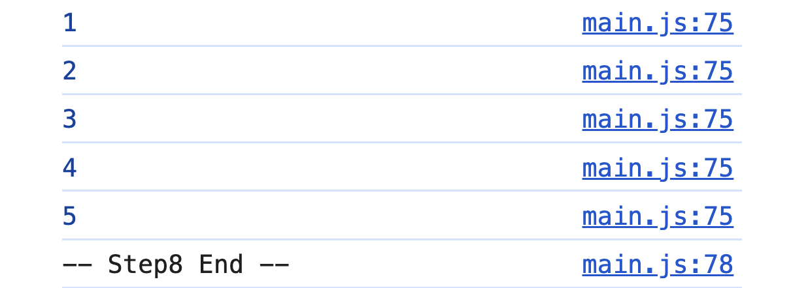
1. “fruits”という名前で、配列を定義する。
2. forEach文を作って、引数のカッコには任意の引数を入れる。
ちなみに、今回扱う引数は複数個ある配列のうちの一つの要素を順番に抜き取る役割を持つ。
3. forEach文内の処理に、コンソールで”fruit”を出力するよう記述する。
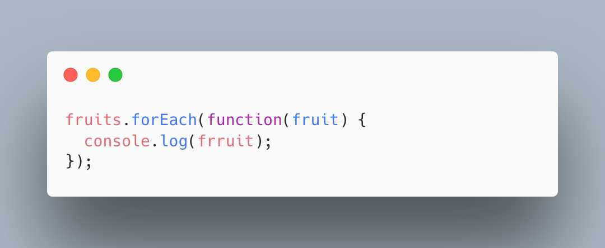